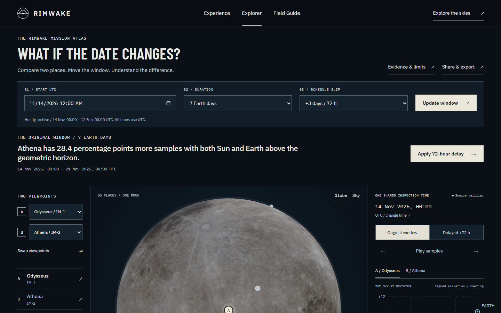
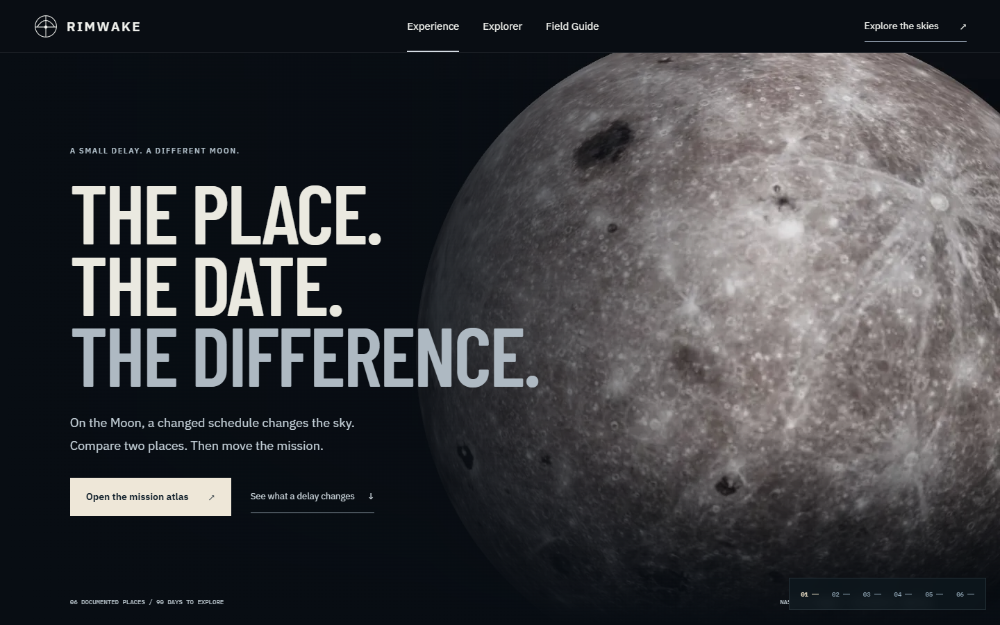

The scientific workspace
Before / cinematic release

After / mission atlas

Actual browser captures. Before: preserved cinematic release. After: current local atlas production build. The original scientific release is unchanged; the atlas has a separate source-backed archive.
Before / cinematic release
After / mission atlas

Before / cinematic release

After / mission atlas

Implementation and remaining gates / Six-slide demonstration